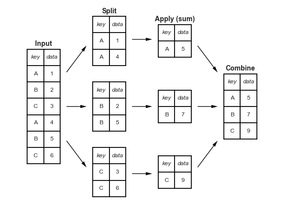

Pandas基础教程（八）数据聚合与分组
[TOC]
对于数据分析来说，一个基本的工作就是计算它的一些统计值，比如sum(), mean(), median(), min(), max()等。这些值描述了数据的一些分布特性以及一些潜在的属性。
本节的例子是一些真实的行星数据，可以通过seaborn下载。
1 | import seaborn as sns |
1. 一些简单的操作
之前我们在Numpy中介绍了一些方法，pandas中同样也有相应的方法，而且又更丰富的方法：
| 方法 | 描述 |
|---|---|
| count() | 总的元素个数 |
| first(), last() | 第一个和最后一个元素 |
| mean(), median() | 平均值和中值 |
| min(), max() | 最大值和最小值 |
| std(), var() | 标准差和方差 |
| mad() | 平均绝对离差 |
| prod() | 所有元素之积 |
| sum() | 所有元素之和 |
这些都是比较简单的操作，不做过多介绍。pandas还提供了一个describe()方法，用于计算多个统计值：
1 | planets.dropna().describe() |
这些都是比较简单的分徐，要想更深入我们可以借助groupby操作。
2. Groupby: split, apply, combine
2.1 split, apply, combine
我们可以用下面的图来简单说明groupby是什么：

从上面的图我们可以清楚的看到groupby实现了以下几个操作：
split：根据特定的’key’，把DataFrame分割成几块，每一块都有相同的索引。apply：计算一些函数，通常是一些上面介绍的聚合函数。combine：将上面计算的结果重新合并成一个DataFrame。
1 | df = pd.DataFrame({'key': ['A', 'B', 'C', 'A', 'B', 'C'], |
我们可以将希望分组的列名传入groupby()中：
1 | df.groupby('key') |
注意，这里没有返回一个DataFrame对象而是返回了一个DataFrameGroupBy对象，该对象表示我们还没有对分组后的数据进行任何形式的操作，只有有了一些操作之后，它才会返回DataFrame:
1 | df.groupby('key').sum() |
2.2 GroupBy对象
2.2.1 列索引
GroupBy对象支持列索引，并且返回一个修正后的GroupBy对象。
1 | planets.groupby('method') |
2.2.2 分组迭代
GroupBy对象还支持直接对分好的组进行迭代。
1 | for (method, group) in planets.groupby('method'): |
2.3 aggregate, filter, transform, apply
前面我们集中讨论了‘aggregation’，但实际上还有更多操作可用，比如aggregaton(), filter(), transform()以及appy()等。
1 | rng = np.random.RandomState(0) |
2.3.1 aggregation
w我们已经熟悉了sum(),median()等操作，实际上aggregation()更加灵活，它可以接受字符串、函数、或者列表，并且计算所有的一次性计算。
1 | df.groupby('key').aggregate(['min', np.median, max]) |
另外，我们还可以传入字典：
1 | #> data1 data2 |
2.3.2 filtering
filtering操作就是使我们可以根据一些条件过滤一些值。比如我们想保留那些标准差大于４的数据：
1 | def filter_func(x): |
2.3.3 transformation
1 | df.groupby('key').transform(lambda x: x - x.mean()) |
2.3.4 apply
apply方法是我们能使用任意函数，包括自定义函数，该函数必须接收一个pandas对象，返回一个pandas对象或者一个标量
1 | def norm_by_data2(x): |
2.4 指定split的key
前面我们是通过传入一个列名来进行分组，实际上我们还有其他方法。
2.4.1 list、array、Serie或者index
如果使用列表或数组作为key的话，它的长度必须和DataFrame的长度匹配。
1 | L = [0, 1, 0, 1, 2, 0] |
2.4.2 字典或系列映射数组
1 | df2 = df.set_index('key') |
2.4.3 任意的python函数
1 | df2.groupby(str.lower).mean() |
2.4.4 有效键列表
更进一步，前面我们提到的那些key还可以组和起来使用。
1 | df2.groupby([str.lower, mapping]).mean() |